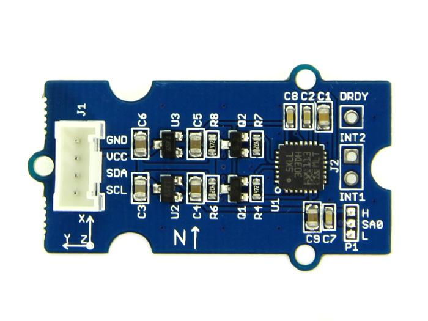

Grove - 6-Axis Accelerometer&Compass is a 3-axis accelerometer combined with a 3-axis magnetic sensor. The Arduino can get these data via the I2C interface with the given library for this module.
|  | ||||
The Version Update history:
| Revision | Descriptions | Release Date |
|---|---|---|
| Grove - 6-Axis Accelerometer&Compass V1.0 | Initial public release | |
| Grove - 6-Axis Accelerometer&Compass V2.0 |
|
FEB 27, 2015 |